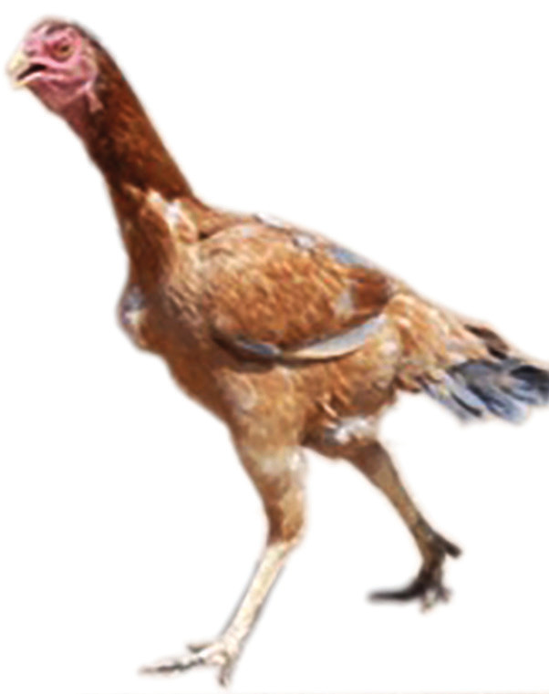
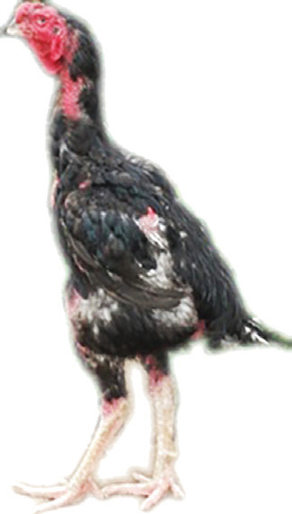
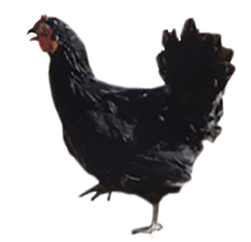
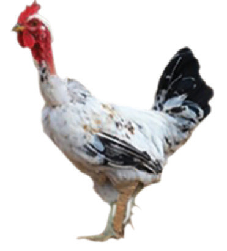
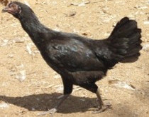
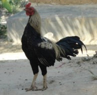
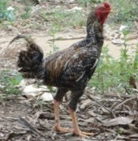
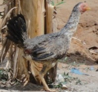

Activity 10.2
Think carefully about the exotic breeds and hybrids you have learnt in this section, and state with reasons whether they are suitable to be reared at your school/home.
Summarise your opinions and lessons learnt from this activity in your portfolio and present them in class for discussion.
The local indigenous breeds
There are several indigenous breeds in Tanzania and other countries in Africa. These breeds however, are genetically and phenotypically different. That is, they neither have similar genes that control traits passed from one generation to the next nor observable characteristics that can easily be seen or measured. Instead, they are groups of chickens that originate and fit more to a particular set of ecological conditions. These chickens show some similar characteristics which make them different from other chickens of different ecological conditions. Since chicken groups of such kinds originate from places with a given set of ecological conditions, they are termed as ecotypes rather than breeds. Examples of local ecotypes found in Tanzania are Kuchi, Ching’wekwe, Singamagazi, Unguja and Pemba (refer to Figures 10.3 (a) to (d)).


Figure 10.3 (b): Singamagazi



Figure 10.3 (c): Unguja


Figure 10.3 (d): Unguja and Pemba
